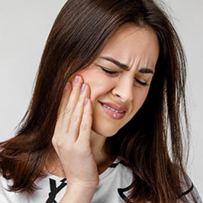
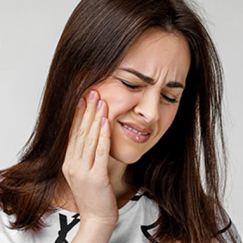

Balances kapha and pitta.
Read more about various ailments, it's causes,
symptoms, ayurvedic treatments, etc.
 

Neem Benefits & Medicinal Uses
1.Treats Acne
Neem has an anti-inflammatory property which helps reduces acne.
Azadirachta Indica also helps reduce skin blemishes.
2. Nourishes Skin
Neem is a rich source of Vitamin E which help repair damaged skin cells.
3. Treats Fungal Infections
Neem has scientifically proven antifungal property which helps treat fungal infections.
4. Useful in Detoxification
Neem can prove useful in detoxification both internally and externally.
Consumption of neem leaves or powder stimulates kidneys and liver
increasing the metabolism and eliminating the toxins out of the body.
Externally, neem scrubs or paste can be used to remove germs,
bacteria, dirt, etc from your skin preventing rashes and skin diseases.
5. Increases Immunity
Neem is known for its antimicrobial and antibacterial effects.
These properties play a huge role in boosting immunity.
6. Insect & Mosquito Repellent
You can burn a few neem leaves to ward off the insects.
This is also effective against different types of mosquitoes .
From all the home remedies for malaria ,
neem is the best for treating the early symptoms of malaria.
7. Prevents Gastrointestinal Diseases
Neem's anti-inflammatory properties help reduce inflammation of the
gastrointestinal tract which helps reduce a series of
diseases like constipation, stomach ulcer, flatulence, etc.
8.Treats Wounds
Neem leaves have an antiseptic property which is why it is used to heal wounds.
9.Reduces Joint Pain
Application of neem oil or extract on the affected
area can help reduce pain and discomfort.
Hence it is widely used for treating arthritis.
10.Exfoliates skin
Neem is an excellent exfoliant.
It helps remove dead cells from the surface of the skin which
will help prevent the growth of blemishes.
11. Reduces Dandruff
Neem is extensively used in shampoos and conditioners.
Azadirachta Indica has antifungal and
antibacterial properties which help eliminate dandruff and strengths your hair.